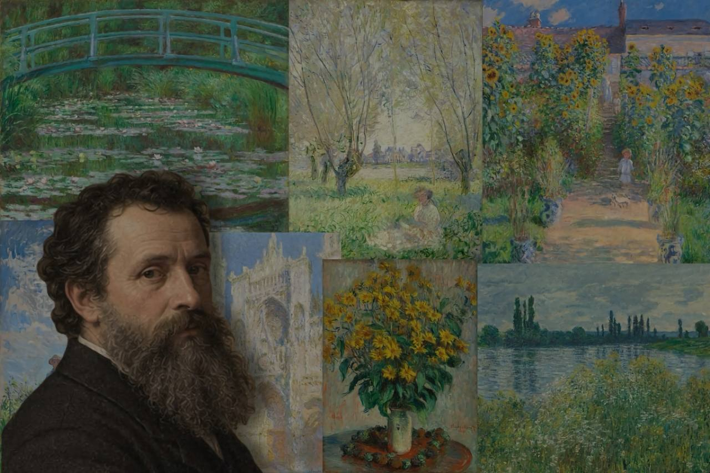
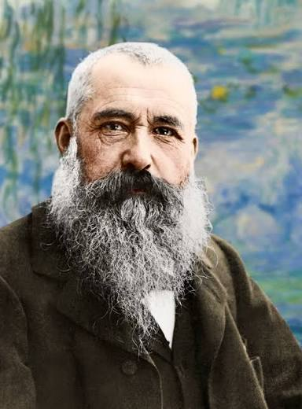
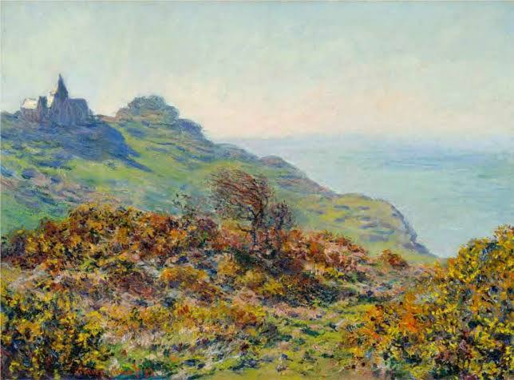
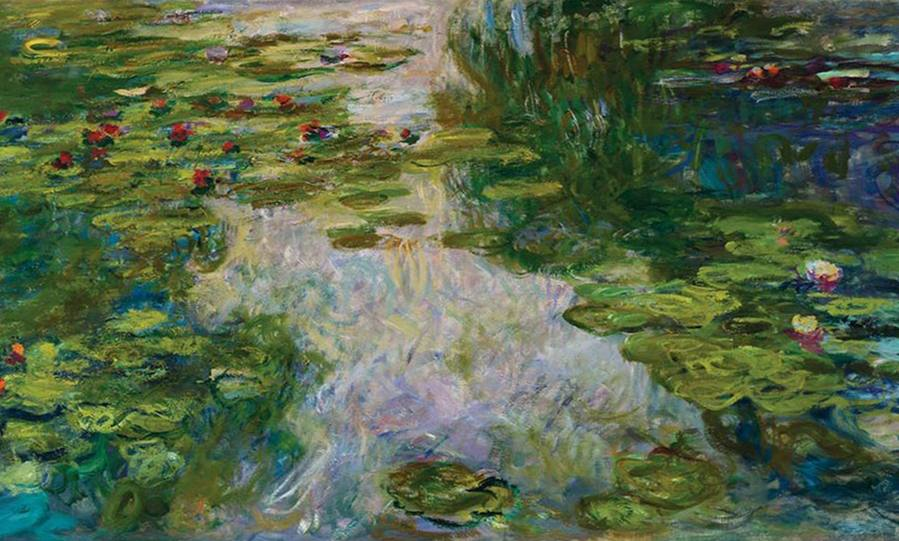
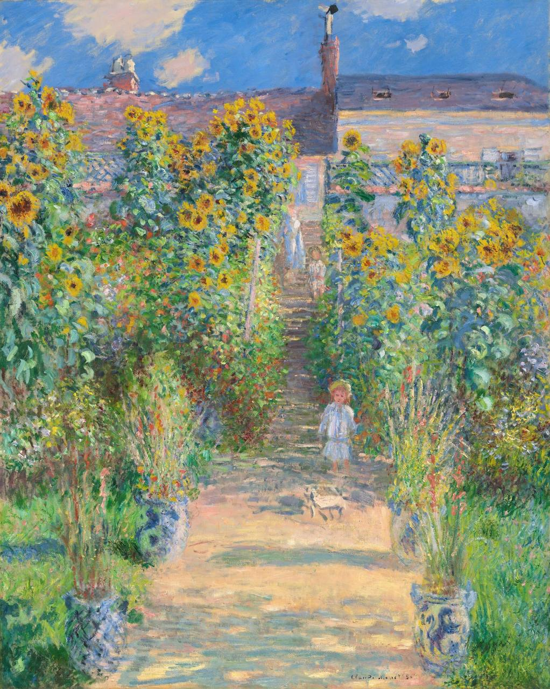
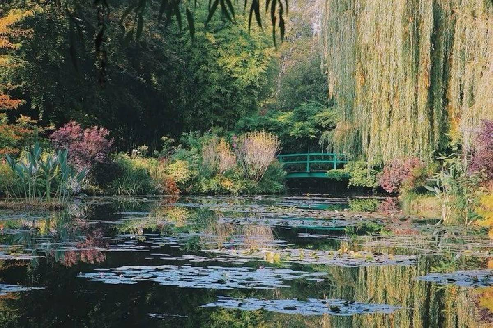

«I must have flowers, always and always.»
Capturing the poetry of nature through the lens of light. Explore the life and masterpieces of the father of Impressionism.
that you will remember forever
click each painting to explore

(1840-1926)
Born in Paris in 1840, Claude Monet transformed the art world by abandoning traditional studio rules. Instead, he stepped outdoors with his easel to capture something far more elusive: the fleeting dance of light, wind, and shadow across nature.
From his early days along the windswept coasts of Normandy to his peaceful later years surrounded by water lilies in Giverny, Monet dedicated every breath to capturing the essence of a single moment before it faded away… View more
Monet captured the essence of nature by chasing the fleeting shifts of light, water, and color across his iconic series.

Light & Atmosphere

Water Lilies

Nature & Gardens
Where Art Meets Nature in Normandy

________________
share your impression of Monet's art